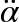
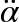

Chapter 19. Sports
The topic of sports is nearly as vast as all of the subjects we’ve covered combined. There is a sport for everyone, and a sport that takes advantage of each of the physical models we’ve discussed so far. The topic ranges from games full of accessories, such as golf or polo, to running, where all you need are your own two feet.
One of the most attractive aspects of sports for the game programmer is that they take place in a limited physical space by design. Unlike a first-person shooter where the player will eventually reach an artificial boundary, in a sports game the player will not expect to be able to walk out of the court. Almost all sports have defined dimensions that are relatively easy to model. Table 19-1 lists a few sports and their professional field dimensions.
|
Sport |
Field size |
|
Soccer (football) |
90–120 m long by 45–90 m wide |
|
Football (including end zones) |
109.7 m long by 48.8 m wide |
|
Baseball |
27.4 m between bases; 18.39 from pitcher’s mound to home base; outfield varies |
|
Basketball (international) |
28 m by 15 m |
|
Ice hockey (international) |
61 m by 30 m |
As you can see, other than baseball—where the shape of the outfield changes depending on what stadium you are in—modeling these field sizes is a rather straightforward exercise.
Additionally, the one thing that sports have in common is that they have a human actor. In this chapter we’ll explore how the human action can be simulated as input for the other physical simulations we’ve discussed. Specifically, we’ll show you an example of how to model a person swinging a golf club using accurate physiological models. This is called biomechanics. Before we get into that, another important thing to understand when you’re modeling sports is the limits of the human body. Although records are broken in every Olympics, no human being is able to jump 10 feet vertically into the air. Unless you are breaking the limits of biomechanics on purpose, doing so will decrease the realism of your game. The biomechanical statistics of what would be considered an outstanding athlete are given in Table 19-2.
|
Physical attribute |
Average value |
Record value |
|
Jump from standstill (vertical) |
81 cm |
155 cm |
|
Running jump height (high jump) |
1.83 m |
2.45 m |
|
Jump distance |
5.0 m |
8.95 m |
|
Throwing speed |
24.5 m/s |
46.0 m/s |
|
Running speed over 100 m |
7.5 m/s |
10 m/s |
|
Running speed over 10,000 m |
3.7 m/s |
6.3 m/s |
Almost all sports records are available online somewhere, so Table 19-2 is by no means exhaustive. However, it is a good idea to use these values to limit your simulations of human actions in your video games. Obviously, part of the excitement of playing video games is to be able to jump higher and run faster than you otherwise could, but a good survey of biomechanics will at least let you know what is extraordinary and what is not. Now let’s take a look at how we would model a human actor in a sports game.
Modeling a Golf Swing
Let’s say you’re writing a golf game and you want include a little realism. An obvious important element of the game is the golf swing. Another is the club-to-ball impact, and still another is the trajectory of the ball in flight. You can use the projectile motion modeling techniques discussed earlier in Chapter 2, Chapter 4, and Chapter 6 to model the ball’s flight, and the collision response techniques in Chapter 5 to model the club-to-ball impact. But what about the golf swing?
Well, before we show you one way to model a golf swing, let’s talk about why you would want to do so in the first place. To model club-to-ball impact, you need to know the club head velocity at the time of impact. That velocity is a function of the swing. The golfer raises the club through his backswing, torques his body, and brings the club head down in an arc while applying a torque with his wrists. As the club swings down, the wrist torque reverses, and the club whips through the downswing until the club head collides with the ball. (Or, in our case, collides with the ground!) Now, there are many subtle details we’ve omitted here with regard to technique and the physics, but you get the idea. At any rate, the swing determines the club head velocity at the moment of impact, which in turn determines the velocity of the ball after impact.
If you were writing a game for the Wii or some other platform that can capture a player’s motion, then you can relate the player’s swing motion to the initial torque applied to a virtual golf club, thus determining, through some model, the swing dynamics and resulting club head velocity.
Golfers take swing technique seriously and so do scientists who study golf swing dynamics. In an effort to understand what makes a good swing or how to improve a swing, there are many scientists out there actively studying the golf swing physics. As a result, there are many mathematical models of varying degrees of realism and complexity that aim to examine the golf swing. One example is the so-called two-rod model as described in Theodore P. Jorgensen’s book The Physics of Golf. In his book, Dr. Jorgensen describes the two-rod model in detail, including assumptions and simplifications, and provides the resulting equations that must be solved to simulate a golf swing based on this model. He even provides empirical data used to validate the results of the mathematical model. As shown in Figure 19-1, the two-rod model assumes that the golfer’s arm is one rod that extends from the shoulders to the wrists. This is the arm rod. The club is represented by another rod that extends from the wrist end of the arm rod to the club head.
This model is essentially a double pendulum. More specifically, it is a driven double pendulum since the model assumes a torque applied at the shoulder end of the arm rod, and another torque applied at the wrist joint connecting the arm rod to the club rod. We won’t repeat Dr. Jorgensen’s development of the model here; instead, we’ll show you how to solve the resulting equations:
Those equations can be found in the Technical Appendix—Section 4 of Dr. Jorgensen’s book—but are listed here for convenience.
Equation 1:
Equation 2:
Table 19-3 explains what each symbol represents.
|
Symbol |
Meaning |
|
J |
Mass moment of inertia of the rod representing the arm. Units are kg-m2. |
|
I |
Mass moment of inertia of the rod representing the club. Units are kg-m2. |
|
Mc |
Mass of the club. Units are kg. |
|
R |
Length of the rod representing the arm. Units are m. |
|
S |
First moment of the rod representing the club about the wrist axis (where the club rod connects to the arm rod). Units are kg-m. |
|
α |
Angle swept by arm rod from initial backswing position. Units are radians. |
|
β |
Wrist-cock angle. Units are radians. |
|
g |
Acceleration due to gravity. Constant 9.8 m/s2. |
|
Θ |
Angle between arm rod and vertical axis. Units are radians. |
|
a |
Horizontal acceleration of the shoulder. Units are m/s2. |
|
SA |
First moment of the arm rod about the shoulder axis. Units are kg-m. |
|
Qα |
Torque applied at the shoulder to the arm rod. Units are N-m. |
|
Qβ |
Torque applied at the wrist joint to the club rod. Units are N-m. |
These equations represent a coupled system of nonlinear differential equations. They are coupled in that they both depend on the unknown quantities α and β. They are clearly differential equations, as they both include time derivatives of the unknown quantities. And they are nonlinear because they include sines and cosines of one of the unknowns along with derivatives of the other unknown raised to some power greater than 1.
So, how do we solve these equations? Well, we can’t do so in closed form and must resort
to numerical means. There are a number of ways to proceed, but the approach we’ll use is to
first solve Equation 2 for  and substitute the result into Equation 1. Then, we’ll numerically integrate
the result using a fourth-order Runge-Kutta scheme, as described in Chapter 7.
and substitute the result into Equation 1. Then, we’ll numerically integrate
the result using a fourth-order Runge-Kutta scheme, as described in Chapter 7.
More specifically, at each time step Equation 1 with replaced by the expression derived from Equation 1 will be solved for  . Once  is found, we can find
. Once  is found, we can find  using the second equation previously solved for . Next, we can integrate
using the second equation previously solved for . Next, we can integrate  and
and  to find α and β. This process then repeats for each time step.
to find α and β. This process then repeats for each time step.
Again, this is only one method of solving these equations. Normally, when faced with a system of equations, practitioners use matrix schemes to solve the equations simultaneously. This is almost necessary for systems of equations that involve more than two equations. However, with just two equations, as we have here, we can avoid expensive matrix inversion computation by using the technique we just described.
Solving the Golf Swing Equations
Now we’ll show you how to implement the solution we described in a simple console application. The example solves the two governing equations for α and β over time, the results of which can then be used to determine the club head velocity at any time instant using kinematic equations as described in Chapter 2 (see the section Rigid-Body Kinematics). Alternatively, you can use the following equation, which Dr. Jorgensen gives for the club head velocity in his book:
We’ll use Jorgensen’s equation in this example.
Since the angles of interest are computed in units of radians, but we want to report
them in units of degrees, we first create a few defines
to make the conversions for us:
#define RADIANS(d) (d/180.0*3.14159) #define DEGREES(r) (r*180.0/3.14159)
Next, we declare and initialize all of the variables. The initial values used here are some typical values that we assumed. You can change these values to simulate different swings:
// Variables double alpha = 0.0; double alpha_dot = 0.0; double alpha_dotdot = 0.0; double beta = RADIANS(120.0); double beta_dot = 0.0; double beta_dotdot = 0.0; double J = 1.15; // kg m^2 double I = 0.08; // kg m^2 double Mc = 0.4; // kg double R = 0.62; // m double L = 1.1; // m double S = 0.4*1.1*0.75; // kg m double g = 9.8; // m/s^2 double gamma = RADIANS(135.0); double theta = gamma - alpha; double SA = 7.3*0.62*0.5; // kg m double Qalpha = 100; // N m double Qbeta = −10; // N m double a = 0.1*g; // m/s^2 double dt = 0.0025; // s double time = 0; // s double Vc = 0;
Next we define two functions that we will use to compute the second time derivatives of
α and β (i.e.,  and
and  ). These functions simply use Equations 1 and 2 solved for
). These functions simply use Equations 1 and 2 solved for  and , respectively.
and , respectively.
ComputeAlphaDotDot, which solves for , is shown here:
double ComputeAlphaDotDot(void)
{
double A, B, C, D, F, G;
double num, denom;
A = (J + I + Mc * R * R + 2 * R * S * cos(beta));
B = -(I + R * S * cos(beta));
F = Qalpha - (beta_dot * beta_dot - 2 * alpha_dot * beta_dot) * R * S *
sin(beta) + S * (g * sin(theta + beta) - a * cos(theta + beta))
+ (SA + Mc * R) * (g * sin(theta) - a * cos(theta));
C = B;
D = I;
G = Qbeta - alpha_dot * alpha_dot * R * S * sin(beta) −
S * (g * sin(theta + beta) - a * cos(theta + beta));
num = (F - (B * G / D));
denom = (A-(B*C/D));
return (F - (B * G / D)) / (A-(B*C/D));
}The local variables A, B, C, D,
F, and G are
convenience variables used to organize the terms in Equation 1. This function returns the
second derivative of α.
ComputeBetaDotDot, shown next, is very similar to
ComputeAlphaDotDot but solves Equation 2 instead. This
function returns the second derivative of β:
double ComputeBetaDotDot(void)
{
double C, D, G;
C = -(I + R * S * cos(beta));
D = I;
G = Qbeta - alpha_dot * alpha_dot * R * S * sin(beta) −
S * (g * sin(theta + beta) - a * cos(theta + beta));
return (G - C * alpha_dotdot) / D;
}The solution to Equations 1 and 2 follows the Runge-Kutta scheme we showed you in Chapter 7.
Four intermediate steps are taken for each time step. The time step size is controlled by
dt, which we’ve set to 0.0025s. If you simply used Euler’s method, you’d have to reduce this step size quite a bit to obtain a
stable solution. We implemented the solution in the main function of our console example.
The code is as follows:
int _tmain(int argc, _TCHAR* argv[])
{
double a, at;
double b, bt;
int i;
FILE* fp;
double phi;
double Vc2;
double ak1, ak2, ak3, ak4;
double bk1, bk2, bk3, bk4;
FILE* fdebug;
fp = fopen("results.txt", "w");
fdebug = fopen("debug.txt", "w");
for(i = 0; i<200; i++)
{
time += dt;
if(time>=0.1)
{
Qbeta = 0;
}
// save results of previous time step
a = alpha;
b = beta;
at = alpha_dot;
bt = beta_dot;
// integrate alpha'' and beta''
// The K1 Step:
alpha_dotdot = ComputeAlphaDotDot();
beta_dotdot = ComputeBetaDotDot();
ak1 = alpha_dotdot * dt;
bk1 = beta_dotdot * dt;
alpha_dot = at + ak1/2;
beta_dot = bt + bk1/2;
// The K2 Step:
alpha_dotdot = ComputeAlphaDotDot();
beta_dotdot = ComputeBetaDotDot();
ak2 = alpha_dotdot * dt;
bk2 = beta_dotdot * dt;
alpha_dot = at + ak2/2;
beta_dot = bt + bk2/2;
// The K3 Step:
alpha_dotdot = ComputeAlphaDotDot();
beta_dotdot = ComputeBetaDotDot();
ak3 = alpha_dotdot * dt;
bk3 = beta_dotdot * dt;
alpha_dot = at + ak3;
beta_dot = bt + bk3;
// The K3 Step:
alpha_dotdot = ComputeAlphaDotDot();
beta_dotdot = ComputeBetaDotDot();
ak4 = alpha_dotdot * dt;
bk4 = beta_dotdot * dt;
alpha_dot = at + (ak1 + 2*ak2 + 2*ak3 + ak4) / 6;
beta_dot = bt + (bk1 + 2*bk2 + 2*bk3 + bk4) / 6;
alpha = a + alpha_dot * dt;
beta = b + beta_dot * dt;
theta = gamma - alpha;
Vc2 = (R*R + L*L + 2 * R * L * cos(beta)) * ( alpha_dot * alpha_dot)
+ L*L * beta_dot * beta_dot
- 2 * (L*L + R * L * cos(beta)) * alpha_dot * beta_dot;
Vc = sqrt(Vc2);
phi = theta + beta;
fprintf(fp, "%f, %f, %f, %f, %f, %f\n", time, DEGREES(theta),
DEGREES(alpha), DEGREES(beta), DEGREES(phi), Vc);
fprintf(fdebug, "%f, %f, %f, %f, %f, %f, %f\n", time, DEGREES(alpha),
alpha_dot, alpha_dotdot, DEGREES(beta), beta_dot, beta_dotdot);
}
fclose(fp);
fclose(fdebug);
return 0;
}Local variables a, at, b, and bt are used to temporarily store the previous time step’s results for α and β
and their first derivatives. i is a counter variable.
fp is a file pointer that we’ll use to write results
out to a text file. phi is used to store the sum of θ +
β. And Vc2 is the square of the club head velocity
calculated according to Jorgensen’s equation. The variables ak1 through ak4, and bk1 through bk4, are used to
store intermediate results of the Runge-Kutta integration scheme. fdebug is a file pointer to a file we used for writing debugging
information.
After the output and debug files are opened, the function enters a loop to perform the integration over 200 time steps. You can change the number of time steps as you see fit for your application. Keep in mind that the swing event, from start to striking the ball, takes place over a very short period of time—only fractions of a second long.
Upon entering the loop, you’ll see some code that checks how much time has elapsed; if
that time is greater than 0.1s, the wrist torque, Qbeta,
is set to 0. This is a crude model of how the wrist torque that’s initially applied is
released, allowing the club to swing past the arm. Depending on the swing you’re modeling,
this torque could actually reverse direction, forcing the club past the arm even more. Dr.
Jorgensen’s book explains all this in detail, even giving experimental results.
Next, results of the previous time step are saved in the variables a, b, at, and bt. The first time
step simply stores the initial values. Now, the integration starts for the first step,
k1 (see Chapter 7). Each
of these steps involves computing  and
and  using the functions
using the functions ComputeAlphaDotDot
and ComputeBetaDotDot. The k1 results are then calculated and used to compute intermediate results for the
first time derivatives of α and β. All four intermediate steps are carried out in a similar
manner.
Finally, the current time step’s results for alpha_dot and beta_dot, along with alpha and beta, are computed.
Also, the square of the club head velocity, Vc2, is
computed using Jorgensen’s equation shown earlier; and the club head velocity, Vc, results from the square root of Vc2.
Results of interest are then written to the output and debug files. So, that’s pretty much it. After the loop finishes, the files are closed and the application terminates.
If this were an actual game, you would use the club head velocity results along with the collision response method we showed in Chapter 3 to determine the golf ball’s trajectory. You could model the flight path of the golf ball using the methods we showed you in Chapter 6.
Billiards
Now let’s take a look at a different example. You may not think of billiards as a sport, but it is recognized internationally as a cue sport. Cue sports are a family of sports that include billiards, pool, snooker, and other related variations. For simplicity, we’ll stick with the term billiards, although the topics presented apply to all cue sports.
Billiards is a good example of an activity that takes place over a limited physical space. Thus, when writing a billiards video game you need only concern yourself with a very finite space composed of well-established geometry. Billiard tables are typically 1.37 m × 2.74 m (4.5 ft × 9 ft), with some longer and some smaller depending on the game, style, and space available. Tables are typically cloth-covered slate. Balls vary in size between games and regions, with American-style pool balls measuring about 57 mm (2.25 inches) in diameter. Balls used to be made of wood, clay, or ivory, but nowadays they are plastic.
All these characteristics are important little details that you must consider if you’re going to make a realistic billiards video game. The slate table and hard plastic balls have certain impact characteristics. The cloth-covered table provides some resistance to rolling. Side bumpers are not as hard as the slate table, thus yielding different impact characteristics. Fortunately, data on billiard tables and balls is readily available on the Web. And simulating billiards in a video game is fairly straightforward.
Billiards makes an interesting example because collisions are the heart of the game, and such an example also gives us an opportunity to demonstrate rolling contact. Figure 19-2 and Figure 19-3 illustrate the example we’ll focus on. We have three object balls (the ones that get struck with the cue ball) set up in the middle of the table in a loose triangle configuration.

The cue ball comes from the right at a set speed (see Figure 19-2) and then impacts the eight ball (see Figure 19-3).

After the initial impact between the cue ball and the eight ball, the eight ball moves to the left and impacts two more balls. These balls then shoot off diagonally. Most of the energy from the eight ball is transferred to the two other balls, so the eight ball quickly comes to rest while being kissed by the cue ball. The other two balls continue rolling away diagonally (see Figure 19-4).

In this example, we’ll show you how to handle ball-ball collisions, ball-table collisions, ball-table contact, aerodynamic drag on the ball, rolling resistance, friction between balls at the time of impact, and friction between the balls and table.
Implementation
If you’ve read and studied the examples presented in Chapter 7 through Chapter 13, then the implementation of this billiards example will be very familiar to you; we use the same basic approach. During each simulation time step, we calculate all the forces acting on each ball; integrate the equations of motion, updating each ball’s position and velocity; and then check for and deal with collisions.
The rigid-body class used in this example is very similar to that used for the airplane example in Chapter 15. Even though the balls are compact and round, and it’s tempting to treat them as particles, you must treat them as 3D rigid bodies in order to capture rolling and spinning, which are important elements of billiard ball dynamics. The rigid-body class adopted for this billiards example is as follows.
typedef struct _RigidBody {
float fMass; // Total mass (constant)
Matrix3x3 mInertia; // Mass moment of inertia in body coordinates
Matrix3x3 mInertiaInverse;// Inverse of mass moment of inertia matrix
Vector vPosition; // Position in earth coordinates
Vector vVelocity; // Velocity in earth coordinates
Vector vVelocityBody; // Velocity in body coordinates
Vector vAcceleration; // Acceleration of cg in earth space
Vector vAngularAcceleration; //Angular acceleration in body coordinates
Vector vAngularAccelerationGlobal; // Angular acceleration
// in global coordinates
Vector vAngularVelocity; // Angular velocity in body coordinates
Vector vAngularVelocityGlobal; // Angular velocity in global coordinates
Vector vEulerAngles; // Euler angles in body coordinates
float fSpeed; // Speed (magnitude of the velocity)
Quaternion qOrientation; // Orientation in earth coordinates
Vector vForces; // Total force on body
Vector vMoments; // Total moment (torque) on body
Matrix3x3 mIeInverse; // Inverse of moment of inertia in earth coordinates
float fRadius; // Ball radius
} RigidBody, *pRigidBody;As you can see, this class looks very similar to the rigid-body classes we’ve used
throughout this book, and in particular that used in the airplane example. All the usual
suspects are here, and the comments in this code sample state what each class member
represents. One particular property you have not seen yet is fRadius—this is simply the billiard ball’s radius, which is used when we are
checking for collisions and calculating drag forces.
As we discussed in Chapter 14, since there are multiple objects
in this simulation that may collide, we’re going to iterate through all the objects,
checking for collisions while storing the collision data. Since there are not that many
objects in this simulation, we don’t really need to partition the game space in order to
optimize the collision detection checks (refer to Chapter 14). The
data we need to store for each collision is included in the following Collision structure:
typedef struct _Collision {
int body1;
int body2;
Vector vCollisionNormal;
Vector vCollisionPoint;
Vector vRelativeVelocity;
Vector vRelativeAcceleration;
Vector vCollisionTangent;
} Collision, *pCollision;The first two properties are indices to the two bodies involved in the collision. The
next property, vCollisionNormal, stores the normal vector
at the point of contact of the collision with the vector pointing outward from body2. The next property, vCollisionPoint, stores the coordinates of the point of contact in global
coordinates. Since we’re dealing with spheres (billiard balls), the collision manifold will
always consist of a single point for each ball-ball or ball-table collision. The next two
properties store the relative velocity and acceleration between the two bodies at the point
of collision. The data is stored in vRelativeVelocity and
vRelativeAcceleration, respectively. To capture
friction at the point of contact, we need to know the tangent vector to the bodies at the
point of contact. This tangent is stored in vCollisionTangent.
We set up several global defines to hold key data,
allowing us to easily tune the simulation:
#define BALLDIAMETER 0.05715f #define BALLWEIGHT 1.612f #define GRAVITY −9.87f #define LINEARDRAGCOEFFICIENT 0.5f #define ANGULARDRAGCOEFFICIENT 0.05f #define FRICTIONFACTOR 0.5f #define COEFFICIENTOFRESTITUTION 0.8f #define COEFFICIENTOFRESTITUTIONGROUND 0.1f #define FRICTIONCOEFFICIENTBALLS 0.1f #define FRICTIONCOEFFICIENTGROUND 0.1f #define ROLLINGRESISTANCECOEFFICIENT 0.025f
The first three defines represent the billiard ball
diameter in meters, the ball weight in newtons, and the acceleration due to gravity in
m/s2. The ball diameter and weight are typical values for
American-style billiard balls (i.e., 2.25 inches and 5.8 oz on average).
The remaining defines are self-explanatory and represent nondimensional coefficients such as drag coefficients and coefficients of restitution. The values you see are what we came up with after tuning the simulation. You’ll surely tune these yourself if you develop your own billiards game.
We use three important global variables for this simulation, as shown here:
RigidBody Bodies[NUMBODIES]; Collision Collisions[NUMBODIES*8]; int NumCollisions = 0;
Bodies is an array of RigidBody types and represents the collection of the billiard balls. Here we’ve
defined NUMBODIES as 4, so there are four billiard balls
in this simulation. We’ve adopted the convention that the cue ball will always be Bodies[0].
Initialization
At the beginning of the simulation, we have to initialize all four billiard balls. We use one
function, InitializeObjects, for this task. It’s a long
function, but it’s really simple. The code is shown on this and the following pages.
Bodies[0] is the cue ball, and it is positioned 50 ball
diameters along the negative x-axis away from the object balls. There’s no magic to this
number; we picked it arbitrarily. Now, we did deliberately set the z-position of the cue
ball (all the balls, for that matter) to one-half the diameter so that the balls would be
just touching the table at the start of the simulation.
To have the cue ball roll from right to left, we gave it an initial velocity of 7 m/s along the positive x-axis. With this initial velocity, the cue ball will begin sliding across the table for some short distance as it also starts to roll due to the friction between the ball and table. You can see in the upcoming code sample that all the other kinematic properties are set to 0 for the cue ball. For the object balls, all of their kinematic properties are set to 0.
We encourage you to experiment with different initial values for the cue ball’s kinematic properties. For example, try setting the angular velocity about any of the coordinate axes to something other than 0. Doing so will allow you to see how a spinning ball may move slightly left or right depending on the spin. It’s also fun to see how spin affects the object balls upon collision with the cue ball.
Aside from setting the positions and kinematic properties of the balls, InitializeObjects also initializes mass properties. We used the
previously defined BALLWEIGHT divided by the acceleration
due to gravity to determine the ball mass. For mass moment of inertia, we simply used the
equations for a solid sphere we showed you way back in Chapter 1:
void InitializeObjects(int configuration)
{
float iRoll, iPitch, iYaw;
int i;
float Ixx, Iyy, Izz;
float s;
/////////////////////////////////////////////////////
// Initialize the cue ball:
// Set initial position
Bodies[0].vPosition.x = -BALLDIAMETER*50.0f;
Bodies[0].vPosition.y = 0.0f;
Bodies[0].vPosition.z = BALLDIAMETER/2.0f;
// Set initial velocity
s = 7.0;
Bodies[0].vVelocity.x = s;
Bodies[0].vVelocity.y = 0.0f;
Bodies[0].vVelocity.z = 0.0f;
Bodies[0].fSpeed = s;
// Set initial angular velocity
Bodies[0].vAngularVelocity.x = 0.0f; // rotate about long'l axis
Bodies[0].vAngularVelocity.y = 0.0f; // rotate about transverse axis
Bodies[0].vAngularVelocity.z = 0.0f; // rotate about vertical axis
Bodies[0].vAngularAcceleration.x = 0.0f;
Bodies[0].vAngularAcceleration.y = 0.0f;
Bodies[0].vAngularAcceleration.z = 0.0f;
Bodies[0].vAcceleration.x = 0.0f;
Bodies[0].vAcceleration.y = 0.0f;
Bodies[0].vAcceleration.z = 0.0f;
// Set the initial forces and moments
Bodies[0].vForces.x = 0.0f;
Bodies[0].vForces.y = 0.0f;
Bodies[0].vForces.z = 0.0f;
Bodies[0].vMoments.x = 0.0f;
Bodies[0].vMoments.y = 0.0f;
Bodies[0].vMoments.z = 0.0f;
// Zero the velocity in body space coordinates
Bodies[0].vVelocityBody.x = 0.0f;
Bodies[0].vVelocityBody.y = 0.0f;
Bodies[0].vVelocityBody.z = 0.0f;
// Set the initial orientation
iRoll = 0.0f;
iPitch = 0.0f;
iYaw = 0.0f;
Bodies[0].qOrientation = MakeQFromEulerAngles(iRoll, iPitch, iYaw);
// Set the mass properties
Bodies[0].fMass = BALLWEIGHT/(-g);
Ixx = 2.0f * Bodies[0].fMass / 5.0f * (BALLDIAMETER/2*BALLDIAMETER/2);
Izz = Iyy = Ixx;
Bodies[0].mInertia.e11 = Ixx;
Bodies[0].mInertia.e12 = 0;
Bodies[0].mInertia.e13 = 0;
Bodies[0].mInertia.e21 = 0;
Bodies[0].mInertia.e22 = Iyy;
Bodies[0].mInertia.e23 = 0;
Bodies[0].mInertia.e31 = 0;
Bodies[0].mInertia.e32 = 0;
Bodies[0].mInertia.e33 = Izz;
Bodies[0].mInertiaInverse = Bodies[0].mInertia.Inverse();
Bodies[0].fRadius = BALLDIAMETER/2;
/////////////////////////////////////////////////////
// Initialize the other balls
for(i=1; i<NUMBODIES; i++)
{
// Set initial position
if(i==1)
{
Bodies[i].vPosition.x = 0.0;
Bodies[i].vPosition.y = -(BALLDIAMETER/2.0f+0.25*BALLDIAMETER);
Bodies[i].vPosition.z = BALLDIAMETER/2.0f;
} else if(i==2) {
Bodies[i].vPosition.x = 0.0;
Bodies[i].vPosition.y = BALLDIAMETER/2.0f+0.25*BALLDIAMETER;
Bodies[i].vPosition.z = BALLDIAMETER/2.0f;
} else {
Bodies[i].vPosition.x = -BALLDIAMETER;
Bodies[i].vPosition.y = 0.0f;
Bodies[i].vPosition.z = BALLDIAMETER/2.0f;
}
// Set initial velocity
Bodies[i].vVelocity.x = 0.0f;
Bodies[i].vVelocity.y = 0.0f;
Bodies[i].vVelocity.z = 0.0f;
Bodies[i].fSpeed = 0.0f;
// Set initial angular velocity
Bodies[i].vAngularVelocity.x = 0.0f;
Bodies[i].vAngularVelocity.y = 0.0f;
Bodies[i].vAngularVelocity.z = 0.0f;
Bodies[i].vAngularAcceleration.x = 0.0f;
Bodies[i].vAngularAcceleration.y = 0.0f;
Bodies[i].vAngularAcceleration.z = 0.0f;
Bodies[i].vAcceleration.x = 0.0f;
Bodies[i].vAcceleration.y = 0.0f;
Bodies[i].vAcceleration.z = 0.0f;
// Set the initial forces and moments
Bodies[i].vForces.x = 0.0f;
Bodies[i].vForces.y = 0.0f;
Bodies[i].vForces.z = 0.0f;
Bodies[i].vMoments.x = 0.0f;
Bodies[i].vMoments.y = 0.0f;
Bodies[i].vMoments.z = 0.0f;
// Zero the velocity in body space coordinates
Bodies[i].vVelocityBody.x = 0.0f;
Bodies[i].vVelocityBody.y = 0.0f;
Bodies[i].vVelocityBody.z = 0.0f;
// Set the initial orientation
iRoll = 0.0f;
iPitch = 0.0f;
iYaw = 0.0f;
Bodies[i].qOrientation = MakeQFromEulerAngles(iRoll, iPitch, iYaw);
// Set the mass properties
Bodies[i].fMass = BALLWEIGHT/(-g);
Ixx = 2.0f * Bodies[i].fMass / 5.0f * (BALLDIAMETER*BALLDIAMETER);
Izz = Iyy = Ixx;
Bodies[i].mInertia.e11 = Ixx;
Bodies[i].mInertia.e12 = 0;
Bodies[i].mInertia.e13 = 0;
Bodies[i].mInertia.e21 = 0;
Bodies[i].mInertia.e22 = Iyy;
Bodies[i].mInertia.e23 = 0;
Bodies[i].mInertia.e31 = 0;
Bodies[i].mInertia.e32 = 0;
Bodies[i].mInertia.e33 = Izz;
Bodies[i].mInertiaInverse = Bodies[i].mInertia.Inverse();
Bodies[i].fRadius = BALLDIAMETER/2;
}
}Stepping the Simulation
During each time step, the simulation’s main loop makes a call to StepSimulation. This function, shown next, is almost identical to the StepSimulation functions we covered in the other examples shown
throughout this book, so there really are no surprises here. StepSimulation first makes a call to CalcObjectForces, which we’ll discuss momentarily, and then proceeds to
integrate the equations of motion for each ball. We use a basic Euler scheme here for simplicity. After integrating, StepSimulation makes a few function calls to deal with collisions. We’ll cover
those shortly.
void StepSimulation(float dtime)
{
Vector Ae;
int i;
float dt = dtime;
int check = NOCOLLISION;
int c = 0;
// Calculate all of the forces and moments on the balls:
CalcObjectForces();
// Integrate the equations of motion:
for(i=0; i<NUMBODIES; i++)
{
// Calculate the acceleration in earth space:
Ae = Bodies[i].vForces / Bodies[i].fMass;
Bodies[i].vAcceleration = Ae;
// Calculate the velocity in earth space:
Bodies[i].vVelocity += Ae * dt;
// Calculate the position in earth space:
Bodies[i].vPosition += Bodies[i].vVelocity * dt;
// Now handle the rotations:
float mag;
Bodies[i].vAngularAcceleration = Bodies[i].mInertiaInverse *
(Bodies[i].vMoments -
(Bodies[i].vAngularVelocity^
(Bodies[i].mInertia *
Bodies[i].vAngularVelocity)));
Bodies[i].vAngularVelocity += Bodies[i].vAngularAcceleration * dt;
// Calculate the new rotation quaternion:
Bodies[i].qOrientation += (Bodies[i].qOrientation *
Bodies[i].vAngularVelocity) *
(0.5f * dt);
// Now normalize the orientation quaternion:
mag = Bodies[i].qOrientation.Magnitude();
if (mag != 0)
Bodies[i].qOrientation /= mag;
// Calculate the velocity in body space:
Bodies[i].vVelocityBody = QVRotate(~Bodies[i].qOrientation,
Bodies[i].vVelocity);
// Get the angular velocity in global coords:
Bodies[i].vAngularVelocityGlobal = QVRotate(Bodies[i].qOrientation,
Bodies[i].vAngularVelocity);
// Get the angular acceleration in global coords:
Bodies[i].vAngularAccelerationGlobal = QVRotate(Bodies[i].qOrientation,
Bodies[i].vAngularAcceleration);
// Get the inverse intertia tensor in global coordinates
Matrix3x3 R, RT;
R = MakeMatrixFromQuaternion(Bodies[i].qOrientation);
RT = R.Transpose();
Bodies[i].mIeInverse = R * Bodies[i].mInertiaInverse * RT;
// Calculate the air speed:
Bodies[i].fSpeed = Bodies[i].vVelocity.Magnitude();
// Get the Euler angles for our information
Vector u;
u = MakeEulerAnglesFromQ(Bodies[i].qOrientation);
Bodies[i].vEulerAngles.x = u.x; // roll
Bodies[i].vEulerAngles.y = u.y; // pitch
Bodies[i].vEulerAngles.z = u.z; // yaw
}
// Handle Collisions :
check = CheckForCollisions();
if(check == COLLISION)
ResolveCollisions();
}Calculating Forces
The first function call made by StepSimulation is a
call to CalcObjectForces, which is responsible for
computing all the forces on each ball except collision forces. This is the same approach
used in previous examples. The entire CalcObjectForces
source code is included here:
void CalcObjectForces(void)
{
Vector Fb, Mb;
Vector vDragVector;
Vector vAngularDragVector;
int i, j;
Vector ContactForce;
Vector pt;
int check = NOCOLLISION;
pCollision pCollisionData;
Vector FrictionForce;
Vector fDir;
double speed;
Vector FRn, FRt;
for(i=0; i<NUMBODIES; i++)
{
// Reset forces and moments:
Bodies[i].vForces.x = 0.0f;
Bodies[i].vForces.y = 0.0f;
Bodies[i].vForces.z = 0.0f;
Bodies[i].vMoments.x = 0.0f;
Bodies[i].vMoments.y = 0.0f;
Bodies[i].vMoments.z = 0.0f;
Fb.x = 0.0f; Mb.x = 0.0f;
Fb.y = 0.0f; Mb.y = 0.0f;
Fb.z = 0.0f; Mb.z = 0.0f;
// Do drag force:
vDragVector = -Bodies[i].vVelocityBody;
vDragVector.Normalize();
speed = Bodies[i].vVelocityBody.Magnitude();
Fb += vDragVector * ((1.0f/2.0f)*speed * speed * rho *
LINEARDRAGCOEFFICIENT * pow(Bodies[i].fRadius,2) *
Bodies[i].fRadius*pi);
vAngularDragVector = -Bodies[i].vAngularVelocity;
vAngularDragVector.Normalize();
Mb += vAngularDragVector * (Bodies[i].vAngularVelocity.Magnitude() *
Bodies[i].vAngularVelocity.Magnitude() * rho * ANGULARDRAGCOEFFICIENT
* 4 * pow(Bodies[i].fRadius,2)*pi);
// Convert forces from model space to earth space:
Bodies[i].vForces = QVRotate(Bodies[i].qOrientation, Fb);
// Apply gravity:
Bodies[i].vForces.z += GRAVITY * Bodies[i].fMass;
// Save the moments:
Bodies[i].vMoments += Mb;
// Handle contacts with ground plane:
Bodies[i].vAcceleration = Bodies[i].vForces / Bodies[i].fMass;
Bodies[i].vAngularAcceleration = Bodies[i].mInertiaInverse *
(Bodies[i].vMoments -
(Bodies[i].vAngularVelocity^
(Bodies[i].mInertia *
Bodies[i].vAngularVelocity)));
// Resolve ground plane contacts:
FlushCollisionData();
pCollisionData = Collisions;
NumCollisions = 0;
if(DOCONTACT)
check = CheckGroundPlaneContacts(pCollisionData, i);
if((check == CONTACT) && DOCONTACT)
{ j = 0;
{
assert(NumCollisions <= 1);
ContactForce = (Bodies[i].fMass * (-Bodies[i].vAcceleration *
Collisions[j].vCollisionNormal)) *
Collisions[j].vCollisionNormal;
if(DOFRICTION)
{
double vt = fabs(Collisions[j].vRelativeVelocity *
Collisions[j].vCollisionTangent);
if(vt > VELOCITYTOLERANCE)
{
// Kinetic:
FrictionForce = (ContactForce.Magnitude() *
FRICTIONCOEFFICIENTGROUND) *
Collisions[j].vCollisionTangent;
} else {
// Static:
FrictionForce = (ContactForce.Magnitude() *
FRICTIONCOEFFICIENTGROUND * 2 *
vt/VELOCITYTOLERANCE) *
Collisions[j].vCollisionTangent;
}
} else
FrictionForce.x = FrictionForce.y = FrictionForce.z = 0;
// Do rolling resistance:
if(Bodies[i].vAngularVelocity.Magnitude() > VELOCITYTOLERANCE)
{
FRn = ContactForce.Magnitude() *
Collisions[j].vCollisionNormal;
Collisions[j].vCollisionTangent.Normalize();
Vector m = (Collisions[j].vCollisionTangent
*(ROLLINGRESISTANCECOEFFICIENT *
Bodies[i].fRadius))^FRn;
double mag = m.Magnitude();
Vector a = Bodies[i].vAngularVelocity;
a.Normalize();
Bodies[i].vMoments += -a * mag;
}
// accumlate contact and friction forces and moments
Bodies[i].vForces += ContactForce;
Bodies[i].vForces += FrictionForce;
ContactForce = QVRotate(~Bodies[i].qOrientation, ContactForce);
FrictionForce = QVRotate(~Bodies[i].qOrientation,
FrictionForce);
pt = Collisions[j].vCollisionPoint - Bodies[i].vPosition;
pt = QVRotate(~Bodies[i].qOrientation, pt);
Bodies[i].vMoments += pt^ContactForce;
Bodies[i].vMoments += pt^FrictionForce;
}
}
}
}As you can see, upon entering CalcObjectForces the
code enters a loop that cycles through all the billiard ball objects, computing the forces
acting on each. The first force computed is simple aerodynamic drag. Both linear and angular drag are computed. We compute the
magnitude of the linear drag by multiplying the linear drag coefficient by
1/2ρV2r2πr, where ρ is the
density of air, V is the ball’s linear speed, and
r is the ball’s radius. We compute the magnitude of the angular drag
moment by multiplying the angular drag coefficient by ωρ4r2π, where ω
is angular speed. Since drag retards motion, the linear drag and angular drag vectors are
simply the opposite of the linear and angular velocity vectors, respectively. Normalizing
those vectors and then multiplying by the respective drag magnitudes yields the linear and
angular drag force and moment vectors.
The next set of forces calculated in CalcObjectForces
is the contact forces between the table top and each ball. There are three contact
forces. One is the vertical force that keeps the balls from falling through the table,
another is the friction force that arises as the balls slide along the table, and the third
is rolling resistance. These forces arise only if the ball is in contact with the table.
We’ll address how to determine whether a ball is in contact with the table later in this
chapter. For now, we’ll assume there’s contact and show you how to compute the contact
forces.
To compute the vertical force required to keep the ball from falling through the table, we must first compute the ball’s linear acceleration, which is equal to the sum of forces (excluding contact forces) acting on the ball divided by the ball’s mass. Next, we take the negative dot product of that acceleration and the vector perpendicular to the table surface and multiply the result by the ball’s mass. This yields the magnitude of the contact force, and to get the vector we multiply that magnitude by the unit vector perpendicular to the table’s surface. The following two lines of code perform these calculations:
Bodies[i].vAcceleration = Bodies[i].vForces / Bodies[i].fMass;
ContactForce = (Bodies[i].fMass * (-Bodies[i].vAcceleration *
Collisions[j].vCollisionNormal)) *
Collisions[j].vCollisionNormal;The vCollisionNormal vector is determined by CheckGroundPlaneContacts, which we’ll cover later. As with
collisions, CheckGroundPlaneContacts fills in a data
structure containing the point of contact, relative velocity between the ball and table at
the point of contact, and the contact normal and tangent vectors, among other data.
To compute the sliding friction force, we must first determine the tangential component of the relative velocity between the ball and table. If the ball is sliding or slipping as it rolls, then the relative tangential velocity will be greater than 0. If the ball is rolling without sliding, then the relative velocity will be 0. In either case, there will be a friction force; in the former case, we’ll use the kinetic friction coefficient, and in the latter we’ll use the static friction coefficient. Friction force is computed in the same way we showed you in Chapter 3. The following lines of code perform all these calculations:
ContactForce = (Bodies[i].fMass * (-Bodies[i].vAcceleration *
Collisions[j].vCollisionNormal)) *
Collisions[j].vCollisionNormal;
double vt = fabs(Collisions[j].vRelativeVelocity *
Collisions[j].vCollisionTangent);
if(vt > VELOCITYTOLERANCE)
{
// Kinetic:
FrictionForce = (ContactForce.Magnitude() *
FRICTIONCOEFFICIENTGROUND) *
Collisions[j].vCollisionTangent;
} else {
// Static:
FrictionForce = (ContactForce.Magnitude() *
FRICTIONCOEFFICIENTGROUND * 2 *
vt/VELOCITYTOLERANCE) *
Collisions[j].vCollisionTangent;
}Keep in mind that these forces will create moments if they do not act through the ball’s center of gravity. So, after computing and aggregating these forces, you must also resolve any moments created and aggregate those using the same formulas we’ve shown through this book. The following lines of code take care of these tasks:
// accumlate contact and friction forces and moments
Bodies[i].vForces += ContactForce;
Bodies[i].vForces += FrictionForce;
ContactForce = QVRotate(~Bodies[i].qOrientation, ContactForce);
FrictionForce = QVRotate(~Bodies[i].qOrientation,
FrictionForce);
pt = Collisions[j].vCollisionPoint - Bodies[i].vPosition;
pt = QVRotate(~Bodies[i].qOrientation, pt);
Bodies[i].vMoments += pt^ContactForce;
Bodies[i].vMoments += pt^FrictionForce;Rolling resistance arises by virtue of small deformations in the cloth-covered table creating a little divot that the ball must overcome as it rolls. This divot shifts the center of application of the contact force just a little bit in the direction of rolling. That small offset results in a moment when multiplied by the contact force. The resulting moment opposes rolling; otherwise, without some other resistance the ball would continue rolling unrealistically. The following code computes the rolling resistance:
// Do rolling resistance:
if(Bodies[i].vAngularVelocity.Magnitude() > VELOCITYTOLERANCE)
{
FRn = ContactForce.Magnitude() *
Collisions[j].vCollisionNormal;
Collisions[j].vCollisionTangent.Normalize();
Vector m = (Collisions[j].vCollisionTangent
*(ROLLINGRESISTANCECOEFFICIENT *
Bodies[i].fRadius))^FRn;
double mag = m.Magnitude();
Vector a = Bodies[i].vAngularVelocity;
a.Normalize();
Bodies[i].vMoments += -a * mag;
}Handling Collisions
Earlier you saw where StepSimulation makes a few function
calls to deal with collision checking and response. You also saw where CalcObjectForces makes a function call that checks for contacts.
The functions that check for collisions or contacts make use of the Collisions array we showed you earlier. This array stores all the relevant
information pertaining to collisions or contacts—the collision or contact manifold, normal and tangent vectors, relative velocity, etc.
The first function we’ll consider is CheckForCollisions, which is called toward the end of StepSimulation. CheckForCollisions checks
for ball-ball collisions; we have a separate function to check for ball-table collisions
that we’ll get to later. CheckForCollisions relies on
concepts we’ve already discussed and showed you in earlier chapters, so we’ll summarize its
action here. Basically, two billiard balls are colliding if 1) they are headed toward each
other, and 2) the distance separating their centers is less than or equal to the sum of
their radii. If both of these criteria are met, then a collision is recorded and all
relevant data is stored in the Collisions array:
int CheckForCollisions(void)
{
int status = NOCOLLISION;
int i, j;
Vector d;
pCollision pCollisionData;
int check = NOCOLLISION;
float r;
float s;
Vector tmp;
FlushCollisionData();
pCollisionData = Collisions;
NumCollisions = 0;
// check object collisions with each other
for(i=0; i<NUMBODIES; i++)
{
for(j=0; j<NUMBODIES; j++)
if((j!=i) && !CollisionRecordedAlready(i, j))
{
// do a bounding sphere check
d = Bodies[i].vPosition - Bodies[j].vPosition;
r = Bodies[i].fRadius + Bodies[j].fRadius;
s = d.Magnitude() - r;
if(s < COLLISIONTOLERANCE)
{// possible collision
Vector pt1, pt2, vel1, vel2, n, Vr;
float Vrn;
pt1 = (Bodies[i].vPosition + Bodies[j].vPosition)/2;
tmp = pt2 = pt1;
pt1 = pt1-Bodies[i].vPosition;
pt2 = pt2-Bodies[j].vPosition;
vel1 = Bodies[i].vVelocity +
(Bodies[i].vAngularVelocityGlobal^pt1);
vel2 = Bodies[j].vVelocity +
(Bodies[j].vAngularVelocityGlobal^pt2);
n = d;
n.Normalize();
Vr = (vel1 - vel2);
Vrn = Vr * n;
if(Vrn < -VELOCITYTOLERANCE)
{
// Have a collision so fill the data structure
assert(NumCollisions < (NUMBODIES*8));
if(NumCollisions < (NUMBODIES*8))
{
pCollisionData->body1 = i;
pCollisionData->body2 = j;
pCollisionData->vCollisionNormal = n;
pCollisionData->vCollisionPoint = tmp;
pCollisionData->vRelativeVelocity = Vr;
pCollisionData->vCollisionTangent = (n^Vr)^n;
pCollisionData->vCollisionTangent.Normalize();
pCollisionData++;
NumCollisions++;
status = COLLISION;
} }
}
}
}
for(i=0; i<NUMBODIES; i++)
{
check = NOCOLLISION;
assert(NumCollisions < (NUMBODIES*8));
check = CheckGroundPlaneCollisions(pCollisionData, i);
if(check == COLLISION)
{
status = COLLISION;
pCollisionData++;
NumCollisions++;
}
}
return status;
}Since CheckForCollisions loops through all of the
balls checking for collisions with every other ball, it is possible that a collision would
be recorded twice. For example, the ith ball may be found to be
colliding with the jth ball, and later the jth
ball would also be found to be colliding with the ith ball. We don’t
want to record that information twice, so we use the following function to check if a
collision between two particular balls is already recorded. If so, we skip re-recording the
data:
bool CollisionRecordedAlready(int i, int j)
{
int k;
int b1, b2;
for(k=0; k<NumCollisions; k++)
{
b1 = Collisions[k].body1;
b2 = Collisions[k].body2;
if( ((b1 == i) && (b2 == j)) ||
((b1 == j) && (b2 == i)) )
return true;
}
return false;
}Checking ball-table collisions is fairly straightforward as well. If 1) a ball is found
to be headed toward the table with some velocity greater than 0 (or some small threshold),
and 2) the ball’s vertical position to its center is less than or equal to its radius, then
we record a collision. CheckGroundPlaneCollisions handles
this for us:
int CheckGroundPlaneCollisions(pCollision CollisionData, int body1)
{
Vector tmp;
Vector vel1;
Vector pt1;
Vector Vr;
float Vrn;
Vector n;
int status = NOCOLLISION;
if(Bodies[body1].vPosition.z <= (Bodies[body1].fRadius))
{
pt1 = Bodies[body1].vPosition;
pt1.z = COLLISIONTOLERANCE;
tmp = pt1;
pt1 = pt1-Bodies[body1].vPosition;
vel1 = Bodies[body1].vVelocity/*Body*/ +
(Bodies[body1].vAngularVelocityGlobal^pt1);
n.x = 0;
n.y = 0;
n.z = 1;
Vr = vel1;
Vrn = Vr * n;
if(Vrn < -VELOCITYTOLERANCE)
{
// Have a collision so fill the data structure
assert(NumCollisions < (NUMBODIES*8));
if(NumCollisions < (NUMBODIES*8))
{
CollisionData->body1 = body1;
CollisionData->body2 = −1;
CollisionData->vCollisionNormal = n;
CollisionData->vCollisionPoint = tmp;
CollisionData->vRelativeVelocity = Vr;
CollisionData->vCollisionTangent = (n^Vr)^n;
CollisionData->vCollisionTangent.Reverse();
CollisionData->vCollisionTangent.Normalize();
status = COLLISION;
}
}
}
return status;
}Resolving collisions, whether ball-ball or ball-table collisions, uses the same approach we’ve already shown you. Thus, we won’t go over the code again, and will instead just show you the function that implements collision response:
void ResolveCollisions(void)
{
int i;
double j;
Vector pt1, pt2, vB1V, vB2V, vB1AV, vB2AV;
float fCr = COEFFICIENTOFRESTITUTION;
int b1, b2;
float Vrt;
float muB = FRICTIONCOEFFICIENTBALLS;
float muG = FRICTIONCOEFFICIENTGROUND;
bool dofriction = DOFRICTION;
for(i=0; i<NumCollisions; i++)
{
b1 = Collisions[i].body1;
b2 = Collisions[i].body2;
if( (b1 != −1) && (b1 != b2) )
{
if(b2 != −1) // not ground plane
{
pt1 = Collisions[i].vCollisionPoint - Bodies[b1].vPosition;
pt2 = Collisions[i].vCollisionPoint - Bodies[b2].vPosition;
// Calculate impulse:
j = (-(1+fCr) * (Collisions[i].vRelativeVelocity *
Collisions[i].vCollisionNormal)) /
((1/Bodies[b1].fMass + 1/Bodies[b2].fMass) +
(Collisions[i].vCollisionNormal * ( ( (pt1 ^
Collisions[i].vCollisionNormal) *
Bodies[b1].mIeInverse )^pt1) ) +
(Collisions[i].vCollisionNormal * ( ( (pt2 ^
Collisions[i].vCollisionNormal) *
Bodies[b2].mIeInverse )^pt2) ) );
Vrt = Collisions[i].vRelativeVelocity *
Collisions[i].vCollisionTangent;
if(fabs(Vrt) > 0.0 && dofriction) {
Bodies[b1].vVelocity +=
((j * Collisions[i].vCollisionNormal) +
((muB * j) * Collisions[i].vCollisionTangent)) /
Bodies[b1].fMass;
Bodies[b1].vAngularVelocityGlobal +=
(pt1 ^ ((j * Collisions[i].vCollisionNormal) +
((muB * j) * Collisions[i].vCollisionTangent))) *
Bodies[b1].mIeInverse;
Bodies[b1].vAngularVelocity =
QVRotate(~Bodies[b1].qOrientation,
Bodies[b1].vAngularVelocityGlobal);
Bodies[b2].vVelocity +=
((-j * Collisions[i].vCollisionNormal) + ((muB *
j) * Collisions[i].vCollisionTangent)) /
Bodies[b2].fMass;
Bodies[b2].vAngularVelocityGlobal +=
(pt2 ^ ((-j * Collisions[i].vCollisionNormal) +
((muB * j) * Collisions[i].vCollisionTangent)))
* Bodies[b2].mIeInverse;
Bodies[b2].vAngularVelocity =
QVRotate(~Bodies[b2].qOrientation,
Bodies[b2].vAngularVelocityGlobal);
} else {
// Apply impulse:
Bodies[b1].vVelocity +=
(j * Collisions[i].vCollisionNormal) /
Bodies[b1].fMass;
Bodies[b1].vAngularVelocityGlobal +=
(pt1 ^ (j * Collisions[i].vCollisionNormal)) *
Bodies[b1].mIeInverse;
Bodies[b1].vAngularVelocity =
QVRotate(~Bodies[b1].qOrientation,
Bodies[b1].vAngularVelocityGlobal);
Bodies[b2].vVelocity -=
(j * Collisions[i].vCollisionNormal) /
Bodies[b2].fMass;
Bodies[b2].vAngularVelocityGlobal -=
(pt2 ^ (j * Collisions[i].vCollisionNormal)) *
Bodies[b2].mIeInverse;
Bodies[b2].vAngularVelocity =
QVRotate(~Bodies[b2].qOrientation,
Bodies[b2].vAngularVelocityGlobal);
}
} else { // Ground plane:
fCr = COEFFICIENTOFRESTITUTIONGROUND;
pt1 = Collisions[i].vCollisionPoint - Bodies[b1].vPosition;
// Calculate impulse:
j = (-(1+fCr) * (Collisions[i].vRelativeVelocity *
Collisions[i].vCollisionNormal)) /
( (1/Bodies[b1].fMass) +
(Collisions[i].vCollisionNormal *
( ( (pt1 ^ Collisions[i].vCollisionNormal) *
Bodies[b1].mIeInverse )^pt1)));
Vrt = Collisions[i].vRelativeVelocity *
Collisions[i].vCollisionTangent;
if(fabs(Vrt) > 0.0 && dofriction) {
Bodies[b1].vVelocity +=
( (j * Collisions[i].vCollisionNormal) + ((muG *
j) * Collisions[i].vCollisionTangent) ) /
Bodies[b1].fMass;
Bodies[b1].vAngularVelocityGlobal +=
(pt1 ^ ((j * Collisions[i].vCollisionNormal) +
((muG * j) * Collisions[i].vCollisionTangent))) *
Bodies[b1].mIeInverse;
Bodies[b1].vAngularVelocity =
QVRotate(~Bodies[b1].qOrientation,
Bodies[b1].vAngularVelocityGlobal);
} else {
// Apply impulse:
Bodies[b1].vVelocity +=
(j * Collisions[i].vCollisionNormal) /
Bodies[b1].fMass;
Bodies[b1].vAngularVelocityGlobal +=
(pt1 ^ (j * Collisions[i].vCollisionNormal)) *
Bodies[b1].mIeInverse;
Bodies[b1].vAngularVelocity =
QVRotate(~Bodies[b1].qOrientation,
Bodies[b1].vAngularVelocityGlobal);
}
}
}
}
}The final function we need to show you is CheckGroundPlaneContacts. Recall that this function is called from CalcObjectForces in order to determine if a ball is in resting
contact with the table. If the ball’s vertical position is less than or equal to its radius
plus some small tolerance, and if the ball’s vertical velocity is 0 (or nearly so within
some small tolerance), then we consider the ball in contact with the table. If there’s a
contact, the relevant data gets stored in the Collisions
array and used to resolve the contact, not the collision, in CalcObjectForces:
int CheckGroundPlaneContacts(pCollision CollisionData, int body1)
{
Vector v1[8];
Vector tmp;
Vector u, v;
Vector f[4];
Vector vel1;
Vector pt1;
Vector Vr;
float Vrn;
Vector n;
int status = NOCOLLISION;
Vector Ar;
float Arn;
if(Bodies[body1].vPosition.z <= (Bodies[body1].fRadius + COLLISIONTOLERANCE))
{
pt1 = Bodies[body1].vPosition;
pt1.z = COLLISIONTOLERANCE;
tmp = pt1;
pt1 = pt1-Bodies[body1].vPosition;
vel1 = Bodies[body1].vVelocity/*Body*/ +
(Bodies[body1].vAngularVelocityGlobal^pt1);
n.x = 0;
n.y = 0;
n.z = 1;
Vr = vel1;
Vrn = Vr * n;
if(fabs(Vrn) <= VELOCITYTOLERANCE) // at rest
{
// Check the relative acceleration:
Ar = Bodies[body1].vAcceleration +
(Bodies[body1].vAngularVelocityGlobal ^
(Bodies[body1].vAngularVelocityGlobal^pt1)) +
(Bodies[body1].vAngularAccelerationGlobal ^ pt1);
Arn = Ar * n;
if(Arn <= 0.0f)
{
// We have a contact so fill the data structure
assert(NumCollisions < (NUMBODIES*8));
if(NumCollisions < (NUMBODIES*8))
{
CollisionData->body1 = body1;
CollisionData->body2 = −1;
CollisionData->vCollisionNormal = n;
CollisionData->vCollisionPoint = tmp;
CollisionData->vRelativeVelocity = Vr;
CollisionData->vRelativeAcceleration = Ar;
CollisionData->vCollisionTangent = (n^Vr)^n;
CollisionData->vCollisionTangent.Reverse();
CollisionData->vCollisionTangent.Normalize();
CollisionData++;
NumCollisions++;
status = CONTACT;
}
}
}
}
return status;
}That’s all there is to this billiards example. As you can see, we used substantially the same methods shown in other examples throughout this book to implement this example. About the only new information we’ve shown here is how to compute rolling resistance. With a little effort, you can combine the material presented in this example with the projectile motion material presented in Chapter 6 to model all sorts of sports balls. Whether you’re modeling a billiard ball bouncing off a table or a basketball bouncing off a backboard, the methods are the same. The only things that will change are the empirical coefficients you use to model each ball and surface. Have fun.